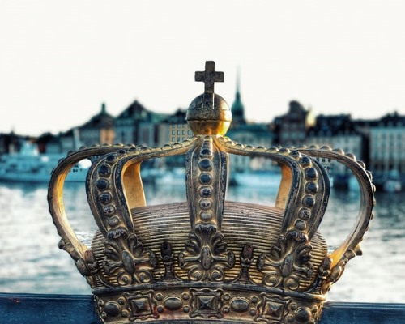
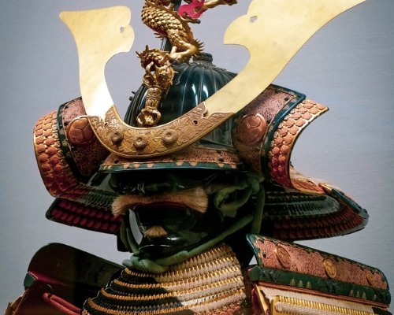
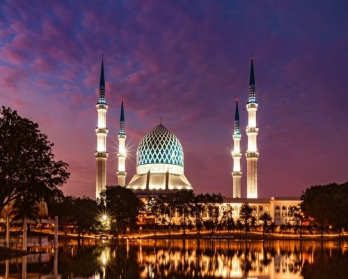
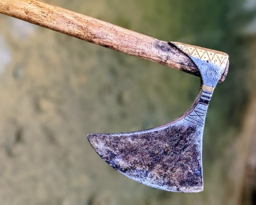
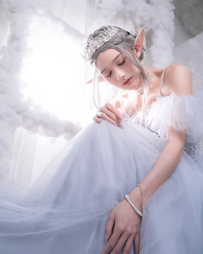
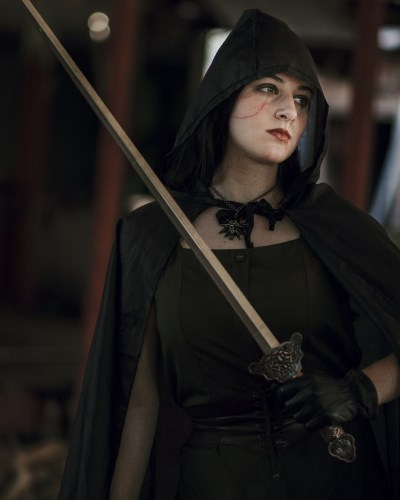
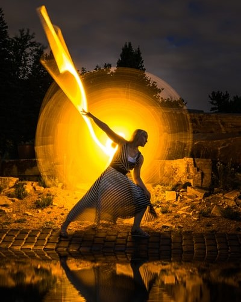
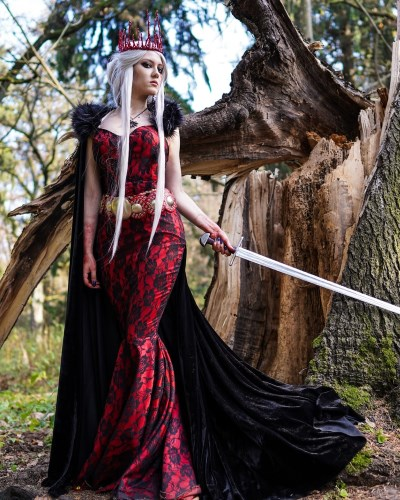
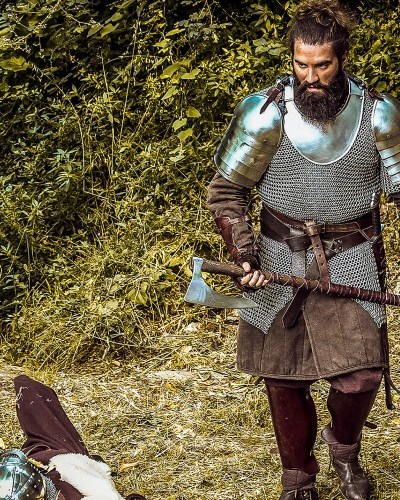

Gaming Campaign League
The Realm of Azkalantra
Venture into the Realm of Azkalantra where many adventures await!
Factions

Elkyria
Elkyria, a beacon of advancing civilization in the medieval ages. They eagerly advance their borders for valuable resouces, stoking embers of war.

Asashima
Placing honor and tradition above all, these artisan warriors of the orient look to defend their way of life.

Halal
Through a singular vision of peace, Halal looks to expand its boundries. They look to defend their peace, even if it means war.

Heimskjall
From a small band of ransacked farmers grew Heimskjell, blood thirsty berserkers bent on revenge.
Player Profiles

Cleo Elmweather
Leader of the unlikely band of adventurers. Cleo is the famed white elf-witch of the north. Though meek in appearance, her sorcery can shake mountains.

Olive Birdsong
A mysterious ranger from the deepwood, Olive is adapted to surviving on her own. She is equally skilled with the sword or bow.

Leeta Islewillow
Leeta is the company's paladin healer. She draws on the healing light and swings her mighty hammer with deathly blows.

Koko Nighthorn
Don't let the name fool you. Koko is a formidable blood queen. She can be a fierce enemy or friend.
